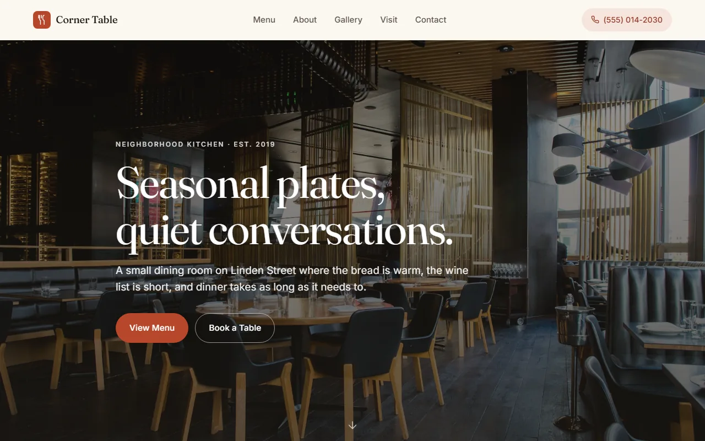

Client Public · 2024 Client work
Corner Table.
A mobile-first restaurant SPA. No framework, no build step, no npm. Installable as a PWA so the staff can pin it to their home screen and stop bookmarking the menu page.

The problem.
Most restaurant sites are Squarespace templates that take 4 seconds to load on 4G and assume every visitor is on a 1440-pixel desktop. The owner just wants three things on a phone: menu, location, hours. So that's what I built — and nothing else.
What I built.
- Mobile-first SPA. Designed for a 375px viewport first. Desktop is the "responsive" version, not the other way around.
- No build step. Vanilla JS modules, no bundler, no transpiler. Edit a file, refresh, done.
- Installable PWA. Service worker + manifest. Adds to home screen like a native app.
- Lighthouse 100/100/100/100. Performance, accessibility, best practices, SEO — all 100.
- Netlify deploy. Push to main → live in 30 seconds. No DevOps.
How I shipped it.
- One file, one job. Each "screen" is its own JS module. No router, no state library, no virtual DOM.
- Service worker last. Got the site working online first, then added offline support and cache-first asset serving.
- Lighthouse-driven. Tuned each metric to 100 before shipping. The 4th 100 (SEO) took the longest.
- Netlify config in repo. netlify.toml lives with the code so re-deployment is just a git push.
The fastest restaurant site I've ever shipped.
— and one of the smallest, too
Like what you read? I can ship this for you.
Send a one-line scope and I'll quote within 24h. Three engagement shapes — fixed-price MVP, embeddable widget, or maintenance retainer.